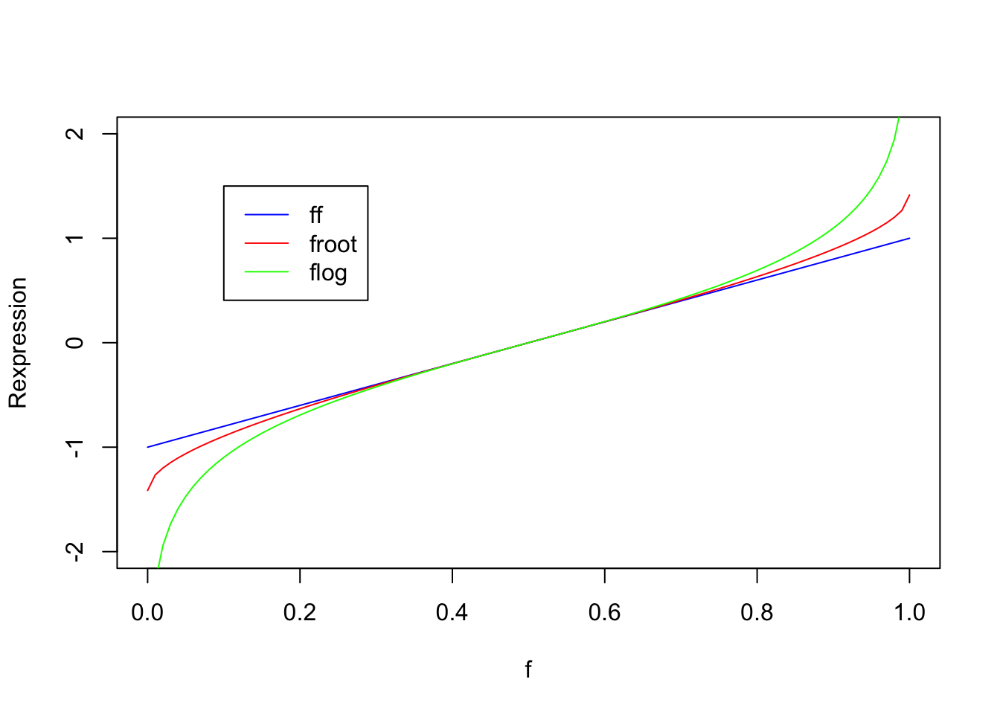
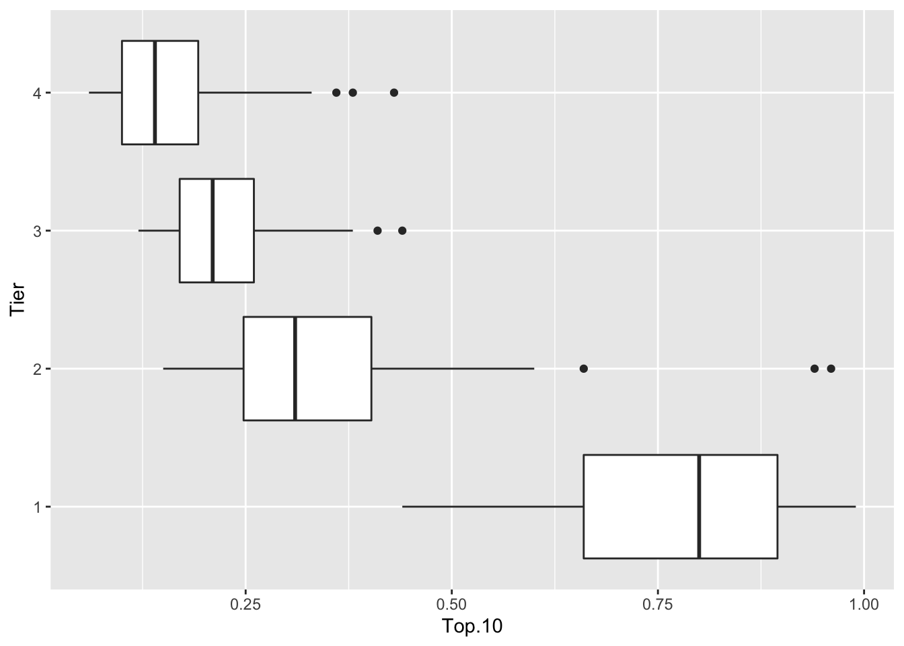
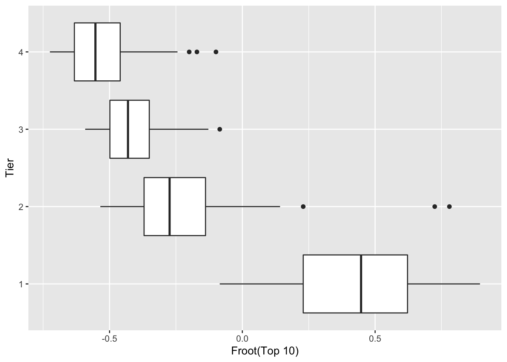
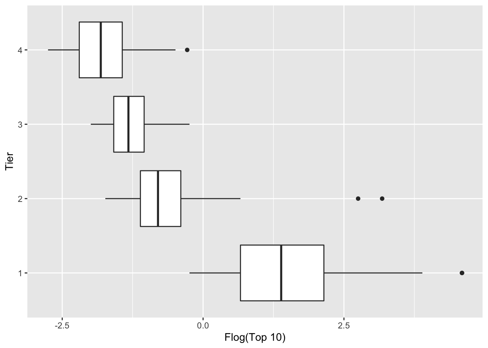

23 Fraction Data
23.1 The Quality of Students at BGSU
A general concern among faculty at BGSU is the quality of the incoming undergraduate freshmen class. Is the university admitting more students of questionable ability? If so, this has a great effect on the performance of the students that take precalculus mathematics in the department. Weak students generally don’t do well in their precalculus or introductory statistics classes.
Back in 1991, the Office of the President was preparing some data to show the university community how much the university had advanced in the nine years between the academic years 1981-1982 and 1990-1991. One statistic that they considered was the “Percentage of Freshmen in the Bottom 50% of High School Graduating Class”
At first glance, one might wonder why they consider the percentage of students in the bottom 50% of their class – wouldn’t it be clearer to consider the percentage of students in the top 50% of their class?
Anyway, the data sheet shows the following:
| – | 1981-1982 | 1990-1991 | % Change |
|---|---|---|---|
| Percentage of Freshmen | |||
| in the Bottom 50% of High | 9.4 % | 6.9 % | (26.6 %) |
| School Graduating Class |
This is supposed to impress you – the percentage of students in the bottom half of their high school class decreased by 26.6 % in the nine-year period.
But what if we considered instead the percentage of students in the top half of the class – we get the following table:
| – | 1981-1982 | 1990-1991 | % Change |
|---|---|---|---|
| Percentage of Freshmen | |||
| in the Top 50% of High | 90.6 % | 93.1 % | 2.8 % |
| School Graduating Class |
We see that the percentage of freshmen in the top half increased by 2.8 %. This doesn’t sound that impressive, so I think I know now why the President’s Office decided to consider the percentage in the bottom half.
But wait – it shouldn’t matter if we consider the percentage of freshmen in the top half or the percentage in the bottom half. Why should our measure of change depend on this arbitrary definition?
In this lecture, we’ll talk about accurate and effective ways of comparing proportions. This type of data suffers from the “change in variability” problem that we saw earlier in our comparison of batches and deserves an appropriate reexpression.
23.2 Meet the Data
The Office of Undergraduate Admissions collects data on the high school ranks of regularly admitted undergraduate students. Using the admissions data, the Office of Institutional Research has the following table that shows the number and % of students in different high school ranks for the past five years.
| – | 1996 | 1997 | 1998 | 1999 | 2000 | |||||
|---|---|---|---|---|---|---|---|---|---|---|
| HS Rank | N | % | N | % | N | % | N | % | N | % |
| 90% - 100% | 321 | 13.3 | 345 | 14.2 | 390 | 13.0 | 373 | 12.3 | 357 | 12.1 |
| 80%-89% | 434 | 18 | 356 | 14.7 | 486 | 16.2 | 504 | 16.6 | 430 | 14.6 |
| 70%-79% | 396 | 16.4 | 387 | 15.9 | 482 | 16.0 | 478 | 15.7 | 459 | 15.6 |
| 60%-69% | 395 | 16.4 | 393 | 16.2 | 485 | 16.1 | 518 | 17.0 | 470 | 16.0 |
| 50%-59% | 377 | 15.6 | 366 | 15.1 | 458 | 15.2 | 439 | 14.4 | 490 | 16.7 |
| Below 50% | 493 | 20.4 | 581 | 23.9 | 704 | 23.4 | 727 | 23.9 | 736 | 25.0 |
| Total | 2416 | 100 | 2428 | 100 | 3005 | 100 | 3039 | 100 | 2942 | 100 |
We will focus here on the table of percentages.
| HS Rank | 1996 | 1997 | 1998 | 1999 |
|---|---|---|---|---|
| 90% - 100% | 13.3 | 14.2 | 13.0 | 12.3 |
| 80%-89% | 18 | 14.7 | 16.2 | 16.6 |
| 70%-79% | 16.4 | 15.9 | 16.0 | 15.7 |
| 60%-69% | 16.4 | 16.2 | 16.1 | 17.0 |
| 50%-59% | 15.6 | 15.1 | 15.2 | 14.4 |
| Below 50% | 20.4 | 23.9 | 23.4 | 23.9 |
| Total | 100 | 100 | 100 | 100 |
The objective here is to get an overall sense how the percentages are changing over the 5-year period. Certain low and high percentages might attract our eye (the 25.0% of students in the bottom half of the HS class in 2000 certainly seems high), but that’s just an isolated value and may not reflect the general pattern of change across years.
23.3 Counted Fractions
To start off, how do we obtain data that is a fraction? This fraction is found by taking a COUNT and dividing by a total number. So \[ FRACTION = \frac{COUNT}{TOTAL}. \] We call these data counted fractions, since the numerator of the fraction is some type of count.
In many cases, we create these counts by cutting continuous data. Our data is this type. A student’s high school rank is a percentage between 0 and 100, and we are cutting this in different places (90, 80, and so on) to get the fractions in the above table.
23.4 Started Counts and Split Counts
Suppose that we sampled 20 students and all of them were in the bottom 90% of their high school class. So the fraction of students in the top 10% of their class is \[ \frac{0}{20} = 0. \] This answer is a bit unsatisfactory, since we know that if we kept on sampling, we would find some students in the top 10% of their class. So we want to adjust our numerator in our fraction for the possibility that some would fall in this class. We adjust the counts of “in the top 10%” and “not in the top 10%” (that is, the two classifications), by adding 1/6 to each type. Then the fraction of students in the top 10% would be \[ \frac{0 + 1/6}{20 + 1/3}. \]
We call (0 + 1/6) a started count, and so the corresponding fraction is a started fraction.
Another issue is that, when we cut continuous data to get our counts, it is possible that some observations will fall on the fence. Since it makes sense to treat the two classes (those in the class and those not in the class) symmetrically, we add half of the counts on the fence to one class and the remaining half of the count to the other class.
Tukey defines the new count \[ {\rm ss-count \, below} = {\rm count \, below} + \frac{1}{2} ({\rm count \, equal}) + \frac{1}{6} \] That is, we add three quantities: - the count below the boundary - one half of the count that falls on the boundary (we call this the split count) - 1/6 (the started count) and the corresponding fraction is given by \[ {\rm ss-fraction \, below} = \frac{{\rm ss-count \,below}} {{\rm total \, count} +1/3}. \] We won’t say any more about starting and split counts here since they won’t be needed for our example.
23.5 Three Matched Scales for Counted Fractions (folded fractions, roots, and logs)
The main issue that we want to address is how to properly express fractions. Fraction data are hard to analyze for several reasons:
- People aren’t sure if they should work with the “fraction that is” or the “fraction that isn’t”. In the Office of the President example above, the person who made the table thought that there was some advantage to working with the fraction of students in the lower half of their class instead of the fraction of students in the top talk.
- Small fractions near 0, and large fractions near 1 have small variation, and fractions close to .5 have large variation. We all know that the standard error of a sample proportion is
This standard error is 0 when the fraction f is 0 or 1, and is maximized when f is equal to .5.
If we reexpress a fraction, what properties would we like of the reexpressed fraction?
- We would like to treat “those who are” and “whose who aren’t” in a symmetric fashion.
- Since \(f = .5\) is a central fraction value, it would be desirable if our reexpressed fraction is equal to 0 when the fraction is equal to .5.
- If we swap a fraction \(f\) with the fraction \(1-f\), the reexpressed fraction will change in size but the size of the fraction won’t change.
The simplest reexpression that has these properties is the folded fraction, which we abbreviate by ff: \[ ff = f - (1-f). \]
The table below gives some folded fractions for values of the fraction f.
| f | .05 | .1 | .3 | .5 | .7 | .9 | .95 |
|---|---|---|---|---|---|---|---|
| ff | -.9 | -.8 | -.4 | 0 | .4 | .8 | .9 |
Note that \(ff\) satisfies our basic properties. The folded fraction for \(f = .1\) is \(ff = -.8\); if we replace \(f = .1\) by \(f = .9\), the value of \(ff\) is changed from -8 to +.8, but the size of ff doesn’t change. A folded fraction \(ff = 0\) corresponds to a fraction \(f = .5\).
We can obtain alternative folded reexpressions by taking the fractions \(f, 1-f\) to the \(p\)th power and then folding: \[ f^p - (1-f)^p. \]
If we use a \(p = \frac{1}{2}\) power, we get a folded root, or froot \[ f^{1/2} - (1-f)^{1/2}. \]
If we use a p = 0 (one more half-step), we get a folded log, or flog \[ log(f) - log(1-f). \] All three rexpressions (\(ff\), \(froot\), \(flog\)) are equal to 0 when \(f\) = .5. Also if you replace \(f\) by \(1-f\), then the measure will change in sign.
To compare these reexpressions, we slightly modify the definitions of \(froot\) and \(flog\) so that they are matched with the folded fractions: \[ froot = (2 f)^{1/2} - (2 (1 - f))^{1/2} \] \[ flog = 1.15 log(f) - 1.15 log(1-f) \]
The table below displays values of the reexpressions for some values of the fraction \(f\). The figure below graphs values of these three reexpressions.
| f | .05 | .1 | .3 | .5 | .7 | .9 | .95 |
|---|---|---|---|---|---|---|---|
| ff | -.9 | -.8 | -.4 | 0 | .4 | .8 | .9 |
| froot | -1.06 | -.89 | -.41 | 0 | .41 | .89 | 1.06 |
| flog | -1.47 | -1.10 | -.42 | 0 | .42 | 1.10 | 1.47 |

The folded fraction \(ff\) is just a linear transformation of \(f\) that changes the support from (0, 1) to (-1, 1). Due to the matching, note that \(ff\), \(froot\) and \(flog\) agree closely for values of \(f\) between .3 and .7. The differences are primarily how the reexpressions handle extreme values of \(f\) near 0 and 1. By taking the root and log, the \(froots\) and \(flogs\) stretch the scale for these extreme values. By stretching values of \(f\) near 0 and 1, this reexpression is adjusting for the small spread in fraction values that are close to 0 or 1.
Here is another graph – we are plotting the three rexpressions (\(ff, froot, flog\)) against the fraction \(f\). This again illustrates the stretching effect of the \(froot\) and \(flog\) reexpressions.

23.6 An Example Illustrating the Benefits of Reexpressing Fractions
The dataset college.ratings contains a number of different measurements of a group of national universities in the United States based on a 2001 survey.
One of the interesting variables is the fraction Top.10, the proportion of students enrolled who were in the top 10 percent of their high school class. The variable Tier with four levels provides a general classification of the universities – the Tier 1 schools are the top-rated schools, followed by the Tier 2 schools, the Tier 3 schools, and the Tier 4 schools. We are interested how the Top.10 variable varies between tiers, and if there is any advantage to reexpressing the fraction Top.10 to a different scale.
Using the geom_boxplot() function, we construct parallel boxplots of the Top 10 variable across tier.
library(LearnEDAfunctions)
ggplot(college.ratings,
aes(factor(Tier), Top.10)) +
geom_boxplot() + coord_flip() + xlab("Tier")## Warning: Removed 28 rows containing non-finite values
## (stat_boxplot).
It is difficult to compare these Top 10 rates due to the difference in variability across tiers. If we focus on the fourth-spreads (or interquartile ranges) the Tier 1 and Tier 2 rates have the small variation, followed by Tier 3 and Tier 4. Using the summarize function in the dplyr package, we compare the interquartile range of Top.10 for each tier.
college.ratings %>%
group_by(Tier) %>%
summarize(IQR = IQR(Top.10, na.rm = TRUE))## # A tibble: 4 × 2
## Tier IQR
## <int> <dbl>
## 1 1 0.235
## 2 2 0.155
## 3 3 0.09
## 4 4 0.0925If we focus on comparisons of tiers 2, 3, 4, we see that the spread of the Tier 2 values (0.155) is about 1.7 times larger than the spread of the Tier 3 values (0.090).
Next, let’s see the effect of transformating the top 10 variable to the \(froot\) and \(flog\) scales. We write short functions defining these functions, and then show boxplots using these two scales.
froot <- function(p) sqrt(p) - sqrt(1- p)
flog <- function(p) log(p) - log(1 - p)ggplot(college.ratings,
aes(factor(Tier), froot(Top.10))) +
geom_boxplot() + coord_flip() +
ylab("Froot(Top 10)") + xlab("Tier")
ggplot(college.ratings,
aes(factor(Tier), flog(Top.10))) +
geom_boxplot() + coord_flip() +
ylab("Flog(Top 10)") + xlab("Tier")
Have these reexpressions helped in equalizing spread? We compute the IQRs of the groups using the \(froot\) and \(flog\) scales.
college.ratings %>%
group_by(Tier) %>%
summarize(IQR_froot = IQR(froot(Top.10), na.rm = TRUE),
IQR_flog = IQR(flog(Top.10), na.rm = TRUE))## # A tibble: 4 × 3
## Tier IQR_froot IQR_flog
## <int> <dbl> <dbl>
## 1 1 0.393 1.48
## 2 2 0.231 0.717
## 3 3 0.148 0.540
## 4 4 0.173 0.763If we focus again on comparisons between tiers 2, 3, and 4, it appears that the \(flog\) expression is best for equalizing spreads. If look at the ratio of the largest IQR to the smallest IQR, then we compute the ratio 1.56 for \(froot\)s and \(1.41\) for \(flog\)s.
Since \(flog\)s have approximately equalized spreads, we can make comparisons between the top 10 flog fractions between tiers 2, 3, and 4 by computing medians.
college.ratings %>%
group_by(Tier) %>%
summarize(M_flog = median(flog(Top.10), na.rm = TRUE))## # A tibble: 4 × 2
## Tier M_flog
## <int> <dbl>
## 1 1 1.39
## 2 2 -0.800
## 3 3 -1.32
## 4 4 -1.82On the \(flog\) scale, the Tier 2 “top 10” fractions tend to be -0.80 - (-1.32) = 0.52 higher than the Tier 3 fractions. Similarly, on the flog scale, the Tier 3 “top 10” fractions tend to be -1.32 - (-1.82) = 0.50 higher than the Tier 4 fractions.
23.7 A Tukey Example Where Careful Reexpression Pays Off
Tukey’s EDA book has a great example that illustrates the benefit of reexpressing fractions. This table comes from a newspaper article – the Washington Post February 2, 1962 article titled “Protestants shifts support to Kennedy”. As you might or might not know, John Kennedy was the first Catholic to have a serious chance of being elected president and one suspected that the Catholics would be more behind Kennedy than Protestants in the election between Kennedy and Nixon. There were polls taken on the dates 11/60 and 1/62. Kennedy’s support increased from 38% to 59% among the Protestants, in contrast to the 11% change in support – 78% to 89% – among the Catholics. On the surface, it would appear that Kennedy’s support has increased more among the Protestants.
| – | Protestants | Protestants | Catholics | Catholics |
|---|---|---|---|---|
| Date | 11/60 | 1/62 | 11/60 | 1/62 |
| Kennedy | 38% | 59% | 78% | 89% |
| Nixon | 62% | 41% | 22% | 11% |
But this conclusion is deceptive since there is smaller variation among the large fractions (in the 70-80% range) than among the middle-range fractions between 38-59%. Suppose that we reexpress to flogs. For example, we reexpress \(f\) = .38 to \(flog = \log(.38)-\log(.62)\), and so on for all the fractions in the table.
| – | Protestants | Protestants | Catholics | Catholics |
|---|---|---|---|---|
| Date | 11/60 | 1/62 | 11/60 | 1/62 |
| Kennedy | -0.24 | 0.18 | 0.63 | 1.05 |
Now let’s look at the change in support in the \(flog\) scale. The change in support (from 11/60 to 1/62) among the Protestants was \(.18 - (-.24) = .42\) and the change in support among the Catholics was also 1.05 - .63 = 0.42. So, by adjusting for the variability problem in the fractions, we see that really Protestant and Catholic changes are similar. Our conclusion is that JFK’s popularity improved by 0.42 on \(flog\) scale (for both Protestants and Catholics)
23.8 Back to the Data – An Analysis Based on Flogs
Let’s return to our BGSU admissions example. We are interested in looking at any possible trend in the HS rank data across years. Here is our data, where the numbers represent the percentages of students in the different HS Rank classes for a given year.
| HS Rank | 1996 | 1997 | 1998 | 1999 | 2000 |
|---|---|---|---|---|---|
| 90% - 100% | 13.3 | 14.2 | 13.0 | 12.3 | 12.1 |
| 80%-89% | 18 | 14.7 | 16.2 | 16.6 | 14.6 |
| 70%-79% | 16.4 | 15.9 | 16.0 | 15.7 | 15.6 |
| 60%-69% | 16.4 | 16.2 | 16.1 | 17.0 | 16.0 |
| 50%-59% | 15.6 | 15.1 | 15.2 | 14.4 | 16.7 |
| Below 50% | 20.4 | 23.9 | 23.4 | 23.9 | 25.0 |
| Total | 100 | 100 | 100 | 100 | 100 |
What we will do is to cut the HS Rank values different places and compute the corresponding flogs. For example, suppose that we cut HS Rank at 90%. Then we have the data table
| HS Rank | 1996 | 1997 | 1998 | 1999 | 2000 |
|---|---|---|---|---|---|
| 90% - 100% | 13.3 | 14.2 | 13.0 | 12.3 | 12.1 |
| 80%-89% | |||||
| 70%-79% | |||||
| 60%-69% | 86.7 | 85.8 | 87.0 | 87.7 | 87.9 |
| 50%-59% | |||||
| Below 50% | |||||
| Total | 100 | 100 | 100 | 100 | 100 |
where I have combined the percentages below the cut. I convert the year fractions (.133, .142, .130, .123, .121) to flogs (I use the basic definition \(\log(f) - \log(1-f)\) here.)
| HS Rank | 1996 | 1997 | 1998 | 1999 | 2000 |
|---|---|---|---|---|---|
| 90% - 100% | \(-1.87\) | \(-1.80\) | \(-1.90\) | \(-1.96\) | \(-1.98\) |
| 80%-89% | |||||
| 70%-79% | |||||
| 60%-69% | |||||
| 50%-59% | |||||
| Below 50% |
Next, we cut the HS Rank data at 80% as follows:
| HS Rank | 1996 | 1997 | 1998 | 1999 | 2000 |
|---|---|---|---|---|---|
| 90% - 100% | 31.3 | 28.9 | 29.2 | 28.9 | 26.7 |
| 80%-89% | |||||
| 70%-79% | |||||
| 60%-69% | 68.7 | 71.1 | 71.8 | 71.1 | 73.3 |
| 50%-59% | |||||
| Below 50% |
Again we convert the fractions to flogs.
| HS Rank | 1996 | 1997 | 1998 | 1999 | 2000 |
|---|---|---|---|---|---|
| 90% - 100% | \(-0.79\) | \(-0.90\) | \(-0.89\) | \(-0.90\) | \(-1.01\) |
| 80%-89% | |||||
| 70%-79% | |||||
| 60%-69% | |||||
| 50%-59% | |||||
| Below 50% |
If we do this procedure for all 5 possible cuts, then we get the following table of flogs:
| CUT | 1996 | 1997 | 1998 | 1999 | 2000 |
|---|---|---|---|---|---|
| 90-100% between 0-89% | -1.87 | -1.80 | -1.90 | -1.96 | -1.98 |
| 80-100% between 0-79% | -0.79 | -0.90 | -0.89 | -0.90 | -1.01 |
| 70-100% between 0-69% | -0.09 | -0.21 | -0.19 | -0.22 | -0.31 |
| 60-100% between 0-59% | 0.58 | 0.45 | 0.46 | 0.47 | 0.34 |
| 50-100% between 0-49% | 1.37 | 1.16 | 1.18 | 1.15 | 1.10 |
This table essentially gives an analysis of fractions where all possible cuts are considered. We are interested in how the flogs change across years. So we compute the differences between consecutive years. The first column shows the change in the flog between 1996 and 1997, the second column the change in flog between 1997 and 1998, and so on.
| CUT | 1996-1997 | 1997-1998 | 1998-1999 | 1999-2000 |
|---|---|---|---|---|
| 90-100% between 0-89% | 0.08 | -0.10 | -0.06 | -0.02 |
| 80-100% between 0-79% | -0.11 | 0.01 | -0.01 | -0.11 |
| 70-100% between 0-69% | -0.12 | 0.02 | -0.02 | -0.09 |
| 60-100% between 0-59% | -0.13 | 0.01 | 0.01 | -0.14 |
| 50-100% between 0-49% | -0.21 | 0.02 | -0.03 | -0.05 |
| MEDIAN | -0.12 | 0.01 | -0.01 | -0.09 |
By looking down each column, we get a general sense of how the HS rank percentages change in consecutive years. The MEDIAN row gives the median change in flog for each two-year sequence. It is pretty clear that the BGSU freshmen’s HS rank significantly decreased from 1996 to 1997 and from 1999 to 2000. In contrast, the HS ranks stayed roughly the same between 1997 and 1999. It would be interesting to see if there were any changes in the admission procedure that may have impacted the quality of the incoming BGSU freshmen.